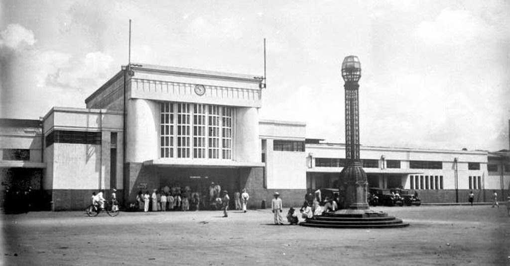
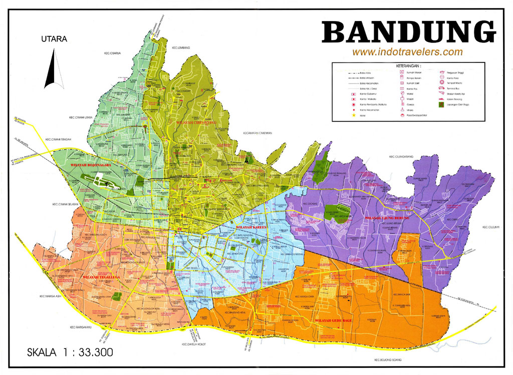

Sejarah

Kata Bandung berasal dari kata bendung atau bendungan karena terbendungnya sungai
Citarum oleh lava Gunung Tangkuban Parahu yang lalu membentuk telaga. Legenda yang
diceritakan oleh orang-orang tua di Bandung mengatakan bahwa nama Bandung diambil dari
sebuah kendaraan air yang terdiri dari dua perahu yang diikat berdampingan yang disebut
perahu bandung yang digunakan oleh Bupati Bandung, R.A. Wiranatakusumah II, untuk
melayari Ci Tarum dalam mencari tempat kedudukan kabupaten yang baru untuk menggantikan
ibu kota yang lama di Dayeuhkolot.
Geografis
Kota Bandung dikelilingi oleh pegunungan, sehingga bentuk morfologi wilayahnya bagaikan
sebuah mangkok raksasa, secara geografis kota ini terletak di tengah-tengah provinsi Jawa
Barat, serta berada pada ketinggian ±768 m di atas permukaan laut, dengan titik tertinggi di
berada di sebelah utara dengan ketinggian 1.050 meter di atas permukaan laut dan sebelah
selatan merupakan kawasan rendah dengan ketinggian 675 meter di atas permukaan laut.

Kota Bandung dialiri dua sungai utama, yaitu Sungai Cikapundung dan Sungai Citarum beserta
anak-anak sungainya yang pada umumnya mengalir ke arah selatan dan bertemu di Sungai
Citarum. Dengan kondisi yang demikian, Bandung selatan sangat rentan terhadap masalah
banjir terutama pada musim hujan.
Wisata
Sejak dibukanya Jalan Tol Cipularang, kota
Bandung telah menjadi tujuan utama dalam
menikmati liburan akhir pekan terutama dari
masyarakat yang berasal dari Jakarta sekitarnya.
Selain menjadi kota wisata belanja, kota Bandungjuga dikenal dengan sejumlah besar bangunan lama berarsitektur peninggalan Belanda.
Farm House Lembang
Berada di jalur utama Bandung-Lembang, Farm House menjadi objek wisata yang tidak pernah
sepi pengunjung. Selain karena letaknya strategis, kawasan ini juga menghadirkan nuansa
wisata khas Eropa. Semua itu diterapkan dalam bentuk spot swafoto Instagramable.
Observatorium Bosscha
Memiliki beberapa teleskop, antara lain, Refraktor Ganda Zeiss, Schmidt Bimasakti, Refraktor
Bamberg, Cassegrain GOTO, dan Teleskop Surya. Refraktor Ganda Zeiss adalah jenis teleskop
terbesar untuk meneropong bintang. Benda ini diletakkan pada atap kubah sehingga saat
teropong digunakan, atap tersebut harus dibuka. Observatorium Bosscha boleh dikunjungi oleh
siapa pun, tanpa tiket. Namun, bagi yang ingin menggunakan teleskop Zeiss, wajib
mendaftarkan diri. Untuk instansi atau lembaga pendidikan, diberikan jadwal hari Selasa sampai Jumat.
Sementara itu, kunjungan individu dibuka
setiap hari Sabtu.